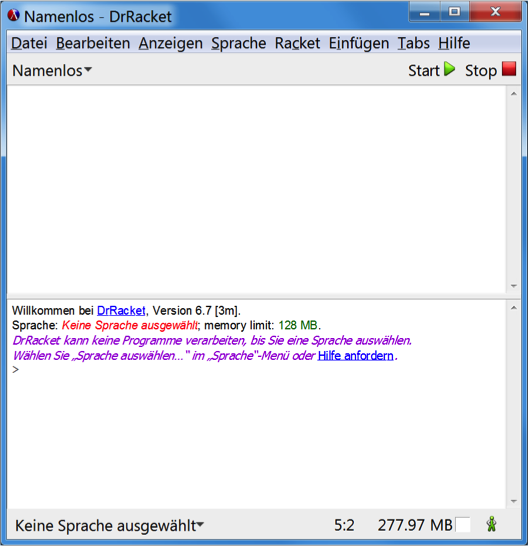
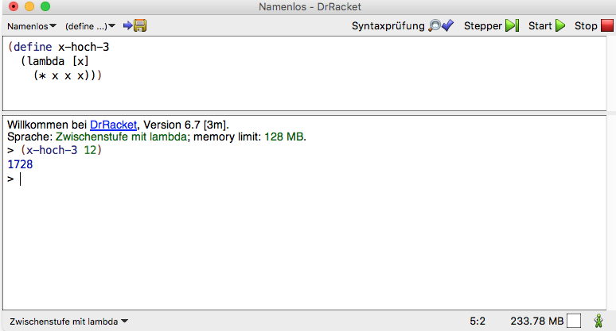

Erste Schritte in Racket
Einführung in die Programmierung
Die Sprache Racket
Funktionale Programmierung
- Es gibt verschiedene Programmierparadigmen, die sich in der Herangehensweise sehr unterscheiden.
- Wichtig sind die objektorientierte Programmierung (heutzutage vorherrschend, z. B. Java, C#, C++), die logische Programmierung (z. B. Prolog) und die funktionale Programmierung (z. B. Racket).
- Bei der funktionalen Programmierung werden Probleme dadurch gelöst, dass Funktionen definiert und aufgerufen werden.
- Funktionale Programmierung orientiert sich stark an der Mathematik.
- Programme in funktionalen Programmiersprachen sind meist deutlich kürzer, einfacher verständlich und besser wiederverwendbar. Es ist aber nicht einfach, gute funktionale Programme zu schreiben.
- Für einige Aufgaben – grafische Benutzungsoberflächen, Anbindung technischer Schnittstellen, logisches Schließen – bieten sich andere Programmierparadigmen eher an.
Die funktionale Programmiersprache Racket und DrRacket
- Racket ist ein Dialekt von Scheme. Scheme ist eine Variante von Lisp. Lisp ist eine sehr alte Programmiersprache (entstanden Ende der 1950er Jahre), ist aber noch weit verbreitet.
- Racket ist einfach aufgebaut und eignet sich daher gut als Programmiersprache für Einsteiger.
- Die Konzepte hinter Racket sind über 20 Jahre alt. Seit dem Jahr 2010 heißt die Programmiersprache Racket.
- DrRacket ist eine integrierte Entwicklungsumgebung (IDE) für Racket. Sie bietet alles Notwendige, ist aber trotzdem nicht überfrachtet.
Installation und Einrichtung von DrRacket
- Auf den NORDAKADEMIE-PCs und Virtuellen Maschinen ist DrRacket im Startmenü im Ordner Racket zu finden.
- Für private Rechner können Installationsdateien unter https://download.racket-lang.org/ heruntergeladen werden.
- Beim ersten Aufruf ist (über das Menü
Spracheeine Sprache zu wählen. - Nehmen Sie bitte „Lehrsprachen“ -> „How to Design Programs“ -> „Zwischenstufe mit Lambda“.
Anschließend einmal auf „Start“ klicken.


Aufbau von DrRacket
- DrRacket verwendet wie viele funktionale Sprachen eine read-eval-print loop (REPL).
- Im oberen Bereich werden Funktionen definiert und mit „Start“ (Strg-R) übersetzt.
- Im unteren Bereich können interaktiv Ausdrücke eingegeben und übersetzt werden.

Elementare Ausdrücke
Auswertung arithmetischer Ausdrücke
- Wir beginnen mit Zahlen
- Racket kennt
- ganze Zahlen (integers) : 6, -12
- rationale Zahlen (rationals, fractions): 2/3, 8/7
- Dezimalzahlen, auch Gleitkommazahlen (decimals, floating point numbers): 3.14159, 6.0, 2.1E7 (entspricht \(2.1\cdot 10^7\) )
- Racket benutzt – wie fast alle bekannten Programmiersprachen – den Dezimalpunkt statt des Dezimalkommas.
- Zahlen werden zu sich selbst ausgewertet (self evaluating expression).
Grundform des arithmetischen Ausdrucks (in Racket):
(operator operand-1 operand-2 ... operand-n)
- Beispiele:
(+ 1 2 3) (* 3 4 5) (/ 9 3) (/ 3 9) (/ 1.0 3.0) (* (+ 2 2) (/ (* (+ 3 5) (/ 30 10)) 2))
(vgl. 2. Aufgabe)
Anwendung und Definition einfacher Funktionen in der Repl
Funktionale Abstraktion
- Problem: Berechnung der Ökosteuer bei:
- gegebenem Preis für die Tankfüllung Benzin: 4500 Eurocent,
- gegebenem Preis pro Liter: 150 Eurocent und
- gegegenem Ökosteueranteil: 7 Cent/l)
- Lösung: \(\frac{4500}{150}\cdot 7\) oder:
(* (/ 4500 150) 7) - Verallgemeinerung der Berechnungsvorschrift, wenn der Preis für die
Tankfüllung und der Literpreis variabel sind, der
Ökosteueranteil hingegen fest ist:
\[\frac{preis\text{-}fuer\text{-}tankfuellung}{preis\text{-}pro\text{-}liter}\cdot 7\]
oder:
(* (/ preis-fuer-tankfuellung preis-pro-liter) 7) - Dieser Ausdruck ist nicht auswertbar. Warum nicht?
Abstraktionsschritt: Definition der Berechnungsvorschrift als Funktion:
\begin{equation} f(preis\text{-}fuer\text{-}tankfuellung, preis\text{-}pro\text{-}liter) = \frac{preis\text{-}fuer\text{-}tankfuellung}{preis\text{-}pro\text{-}liter}\cdot 7 \end{equation}- Die Funktion könnte dann so benutzt werden: \(f(4500, 150)\)
- Dieser Ausdruck liefert als Resultat wieder \(210\).
- In Racket besteht die Abstraktion aus zwei Schritten.
Definition der Berechnungsvorschrift als Funktion:
(lambda [preis-fuer-tankfuellung preis-pro-liter] (* (/ preis-fuer-tankfuellung preis-pro-liter) 7))
- Dieser Ausdruck ist auswertbar, das Resultat ist eine Funktion.
Eine Funktion kann in Racket wie ein Operator verwendet werden:
(function operand-1 operand-2 ... operand-n)
Ersetzt man „function” durch obige Funktion, kann diese wie folgt angewendet werden:
( (lambda [preis-fuer-tankfuellung preis-pro-liter] (* (/ preis-fuer-tankfuellung preis-pro-liter) 7)) 4500 150)
- Das Resultat ist wieder 210.
Mit dieser Abstraktion ist insofern noch nicht so viel gewonnen, als die Funktionsdefinition bei jeder Anwendung der Funktion erneut mit angegeben werden müsste. Deswegen erlaubt Racket die Bindung einer Berechnungsvorschrift (Funktion) an einen Namen:
(define oeko-steuer (lambda [preis-fuer-tankfuellung preis-pro-liter] (* (/ preis-fuer-tankfuellung preis-pro-liter) 7)))
Danach kann die Funktion durch Angabe des Namens angewendet werden. So liefert der Ausdruck
(oeko-steuer 4500 150)wieder den Wert 210.
Ausdrücke in Racket (1)
Nach dem zuvor Erläuterten kann der Aufbau von Ausdrücken in Racket wie folgt präzisiert werden. Die Grundform bleibt dabei unverändert:
(operator operand-1 operand-2 ... operand-n)
Operatoren sind Namen von
- Standardfunktionen wie z. B: +, /, *, - für die vier Grundrechenarten
- eigenen Funktionen:
oeko-steuer - Pseudofunktionen:
define,lambda - namenlose Funktionen (lambda-Ausdrücke)
Beispiele für Operanden sind (neben vielen anderen):
- Zahlen: 3.14, 4500, 2/3
- Variable:
preis-pro-liter - Ausdrücke:
(f ...) - boolesche Werte:
#trueund#false
(s. Aufgaben 3, 4)
Anmerkung: Racket kennt auch noch andere Konstanten als Zahlen, außerdem eine Vielzahl von Standardfunktionen. Dazu später mehr je nach Bedarf.
Zusammenfassung
- Funktionale Programmierung ist ein wichtiges Programmierparadigma.
- Racket ist eine funktionale Programmiersprache, die einfach und somit sehr gut für Einsteiger geeignet ist.
- DrRacket ist eine integrierte Entwicklungsumgebung für Racket. Sie folgt dem REPL-Prinzip(read-eval-print loop).
- Racket versteht verschiedene Zahlenformate. In runden Klammern werden zuerst ein Operator(z. B. eine arithmetische Funktion) und dann beliebig viele Operanden zusammengefasst.
- Mit dem Lambda-Operator können eigene Funktionen definiert werden. Über Parameter können Funktionen Werte als Argumente übergeben werden.
- Mit der Pseudofunktion
definekann eine Funktion an einen Namen gebunden werden.